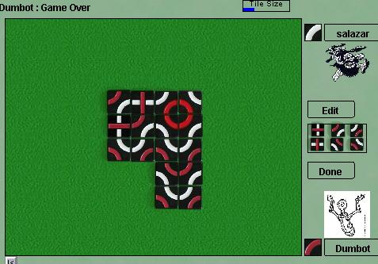

Trax
Trax est un jeu élégant qui se pratique avec des tuiles d'un type
unique, possédant une croix sur une face et deux quarts de cercles
sur l'autre. Le but du jeu est de former une boucle fermée de
votre couleur ou une ligne atteignant la largeur de huit tuiles d'une extrémité
à l'autre. Les espaces ne pouvant contenir qu'une tuile déterminée
sont automatiquement remplis. il existes quelques conditions complémentaires
dans les règles
officielles, mais vous connaissez le principal.
Trax est un jeu rapide et tactique, dans lequel un joueur est toujours en
position pour menacer directement de gagner. Joué par des experts,
la reconnaissance de formes semble plus importante que la profondeur d'analyse.
Robots : les robots sont assez forts
mais restent battables. Ils sont assez bons pour vous apprendre le
jeu, mais pas assez pour vous servir d'entraineur en vue d'un tournoi important.
|

|